Introducción
OAI-Downloader es una aplicación gratuita desarrollada por Corrosion Labs para realizar copias de seguridad locales de las conversaciones y recursos almacenados en una cuenta de ChatGPT.
Su objetivo es permitir al usuario conservar y controlar sus propios datos sin depender exclusivamente de la exportación oficial de OpenAI.
¿Por qué hemos creado OAI-Downloader?
Porque recuperar nuestros propios datos de ChatGPT se había convertido en una experiencia desesperante.
OpenAI ofrece un sistema oficial de exportación que, en teoría, permite descargar el historial de conversaciones y los datos asociados a una cuenta. En la práctica, nuestra experiencia fue bastante menos satisfactoria.
Exportaciones que no llegaban, descargas incompletas, archivos corruptos y copias de seguridad que resultaban inutilizables.
Cuando una cuenta acumula años de conversaciones, proyectos, documentos e imágenes, estos problemas dejan de ser una simple molestia técnica. Se convierten en un riesgo real de pérdida de información.
Y lo más absurdo es que estamos hablando de nuestros propios datos.
No debería ser necesario recurrir a soluciones improvisadas para recuperar información que hemos generado y almacenado durante meses o años en un servicio por el que, en muchos casos, estamos pagando.
Después de varios intentos fallidos con la exportación oficial, decidimos construir nuestra propia herramienta.
OAI-Downloader no nació para hacer más cómoda una función que ya existía. Nació porque necesitábamos una alternativa que funcionara.
Una aplicación capaz de examinar la cuenta, identificar sus contenidos, descargarlos progresivamente, registrar los errores y continuar una operación interrumpida sin tener que empezar de cero.
En definitiva, recuperar el control sobre nuestra información.
Porque resulta bastante irónico que una empresa dedicada a desarrollar algunas de las tecnologías más avanzadas del mundo no consiga ofrecer una descarga fiable de los datos de sus usuarios.
¿Qué hace?
- System: comprueba la conexión y configura la carpeta de trabajo.
- Analysis: identifica proyectos y conversaciones, y distingue los contenidos nuevos, modificados y sin cambios.
- Inventory: crea un inventario local de conversaciones y recursos.
- Download: descarga los recursos pendientes y registra los resultados para actualizaciones posteriores.
El procedimiento permite copias incrementales, evita descargar de nuevo archivos ya guardados y admite seleccionar proyectos concretos.
Diseñado para grandes volúmenes de información
Incluye modos de descarga, procesamiento paralelo, seguimiento de progreso y opciones de recuperación para operaciones largas. El inventario diferencia recursos descargados, pendientes, no disponibles y fallidos.
Una herramienta de conservación, no de exportación documental
OAI-Downloader se centra en recuperar y conservar información original de ChatGPT. La transformación de las conversaciones a formatos de lectura corresponde a herramientas posteriores, como OpenAI Obsidian Processor.
Independencia y control
Funciona localmente y permite elegir la ubicación de las copias. No sustituye a ChatGPT ni modifica los contenidos de la cuenta.
Los proyectos, las conversaciones y los materiales construidos con estas herramientas no deberían depender de un único servicio para seguir existiendo.
OAI-Downloader es un proyecto independiente de Corrosion Labs y no está afiliado a OpenAI.
Inicio de la aplicación
IMPORTANTE: inicia siempre OAI-Downloader desde el launcher. Esta ventana prepara la configuración y abre la aplicación. No inicies directamente el servidor ni la interfaz interna.
Primera ejecución
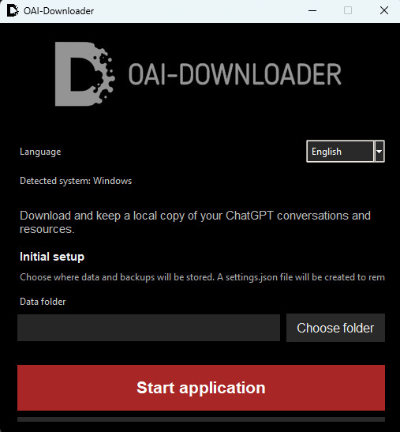
La primera vez, el launcher solicita seleccionar la carpeta donde se guardarán los datos de trabajo y las copias de seguridad. También crea un archivo settings.json para recordar la ubicación.
- Language: selecciona el idioma del launcher.
- Detected system: muestra el sistema operativo detectado automáticamente.
- Data folder / Choose folder: permite seleccionar la carpeta de almacenamiento.
- Start application: guarda la configuración e inicia OAI-Downloader.
Antes de iniciar por primera vez, es necesario seleccionar una carpeta de datos.
Ejecuciones posteriores
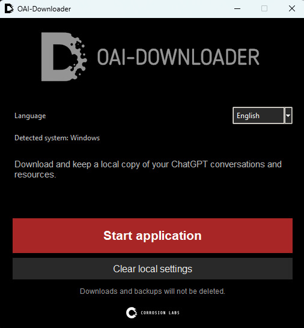
Cuando ya hay una carpeta configurada, el launcher muestra una pantalla más sencilla. Se mantienen el selector de idioma y el sistema detectado.
- Start application: inicia OAI-Downloader utilizando la configuración guardada.
- Clear local settings: elimina la configuración local y permite configurar de nuevo la carpeta de datos.
Borrar la configuración local no elimina las descargas ni las copias de seguridad. En el siguiente inicio será necesario volver a elegir la carpeta de trabajo.
Microsoft Edge WebView2 (Windows)
En Windows, la ventana principal utiliza WebView2. Si no se abre o muestra un error relacionado con este componente, comprueba que Microsoft Edge WebView2 Runtime esté instalado y actualizado.
REQUISITO EN WINDOWS: mantén actualizado WebView2 Runtime. Puedes instalarlo o actualizarlo desde la página oficial de Microsoft.
System: configuración inicial
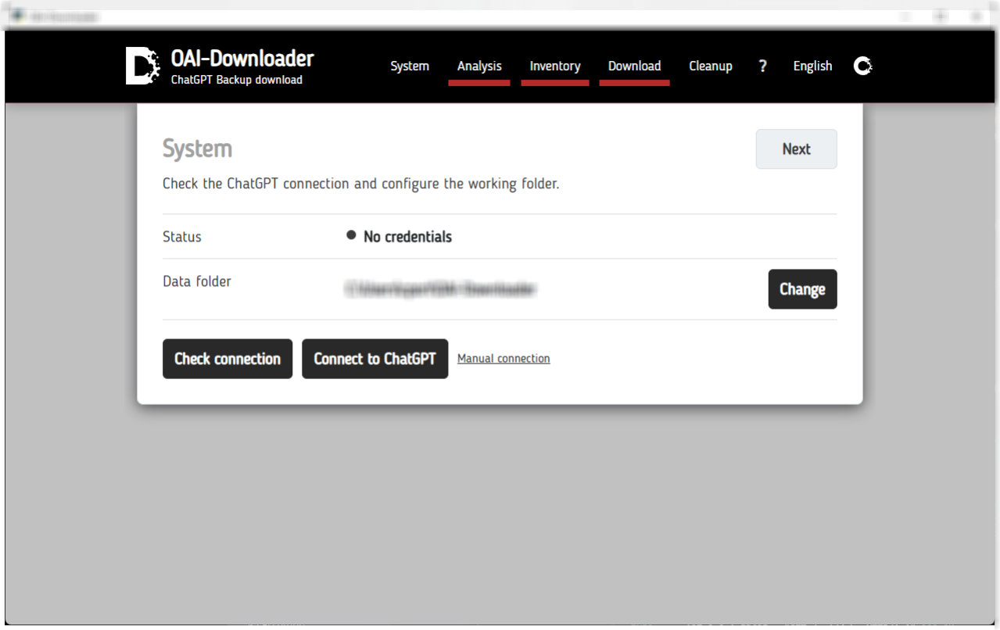
IMPORTANTE · Seguridad de las credenciales: OAI-Downloader no guarda contraseñas ni cookies de autenticación en disco. Las credenciales de sesión se mantienen únicamente en memoria RAM mientras la aplicación funciona. Por eso debes volver a iniciar sesión en ChatGPT cada vez que abras OAI-Downloader.
La pantalla System es el punto de partida de OAI-Downloader. Permite comprobar la conexión con ChatGPT y establecer la carpeta donde se almacenarán los datos descargados.
Estado de conexión
El campo Status muestra el estado actual de la conexión. No credentials indica que todavía no se han configurado las credenciales.
Carpeta de datos
Data folder muestra la ubicación de almacenamiento. El botón Change permite elegir otra carpeta.
Opciones de conexión
- Check connection: comprueba las credenciales disponibles.
- Connect to ChatGPT: inicia el procedimiento de conexión.
- Manual connection: permite configurar la conexión manualmente.
Etapas
System → Analysis → Inventory → Download. El proceso es secuencial: cada etapa depende de la anterior. Cleanup es opcional. Tras comprobar la conexión, Next permite avanzar.
Barra de navegación
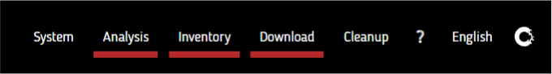
La barra superior identifica las etapas y ofrece acceso a las funciones generales.
- System: conexión y carpeta de trabajo.
- Analysis: análisis de proyectos y conversaciones.
- Inventory: inventario de recursos.
- Download: descarga de archivos.
- Cleanup: limpieza opcional.
Los indicadores de color muestran el estado: verde, etapa completada; naranja, en curso; rojo, pendiente. No es posible ejecutar una fase antes de completar las anteriores.
El icono ? abre la ayuda contextual, el selector English permite cambiar el idioma y el icono circular señala actividad de la aplicación.
Estado de conexión
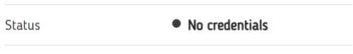
Status indica si OAI-Downloader dispone de las credenciales necesarias para conectarse a ChatGPT.
No credentials, acompañado de un indicador gris, significa que la aplicación no dispone de credenciales de acceso. Para conectarse es necesario utilizar una de las opciones disponibles en System.
Carpeta de datos
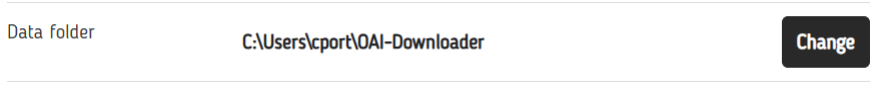
Data folder muestra la ubicación de la carpeta local de trabajo. En ella se almacenan los datos y archivos descargados.
El botón Change permite seleccionar otra ubicación. Es recomendable utilizar una carpeta dedicada a OAI-Downloader, con espacio suficiente para las descargas, especialmente si hay numerosos archivos multimedia.
Conexión manual mediante cookies
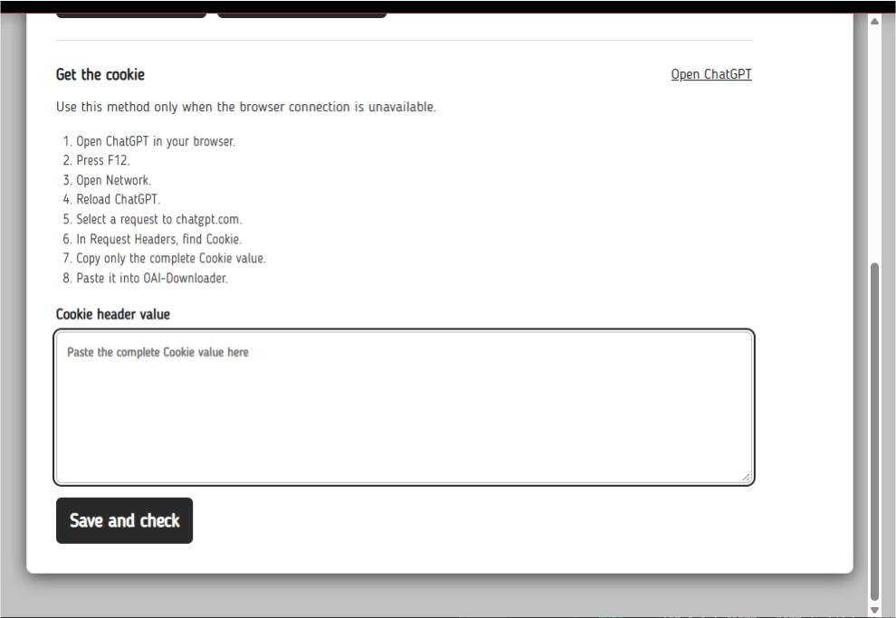
Manual connection permite establecer la conexión cuando no se utiliza el procedimiento automático mediante navegador.
Obtener la cookie de sesión
- Abre ChatGPT e inicia sesión.
- Pulsa F12 para abrir las herramientas de desarrollador.
- Entra en Network (Red) y recarga la página.
- Selecciona una petición dirigida a
chatgpt.com. - En Request Headers, localiza Cookie.
- Copia el valor completo, sin el prefijo
Cookie:. - Pégalo en Cookie header value dentro de OAI-Downloader.
- Pulsa Save and check para comprobar la conexión.
Seguridad: las cookies son credenciales privadas que pueden permitir el acceso a tu cuenta. No las compartas ni las muestres en capturas.
System: conexión establecida
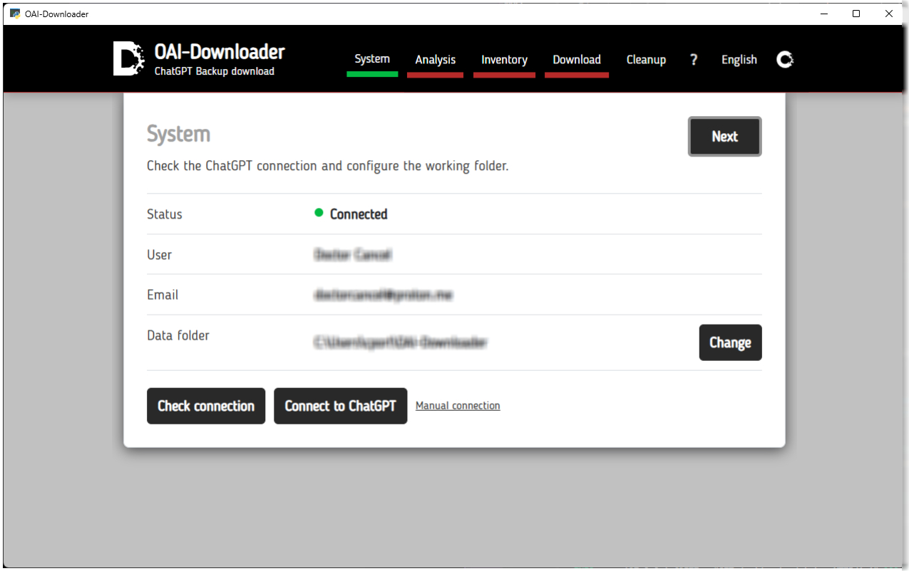
Una vez verificada la conexión, System muestra los datos de la cuenta conectada.
- Status: Connected: indicador verde de conexión activa.
- User: usuario asociado a la cuenta.
- Email: correo electrónico de la cuenta.
- Data folder: carpeta local elegida.
El indicador verde bajo System confirma que la fase ha terminado. Next queda habilitado para avanzar a Analysis.
Analysis: análisis de proyectos
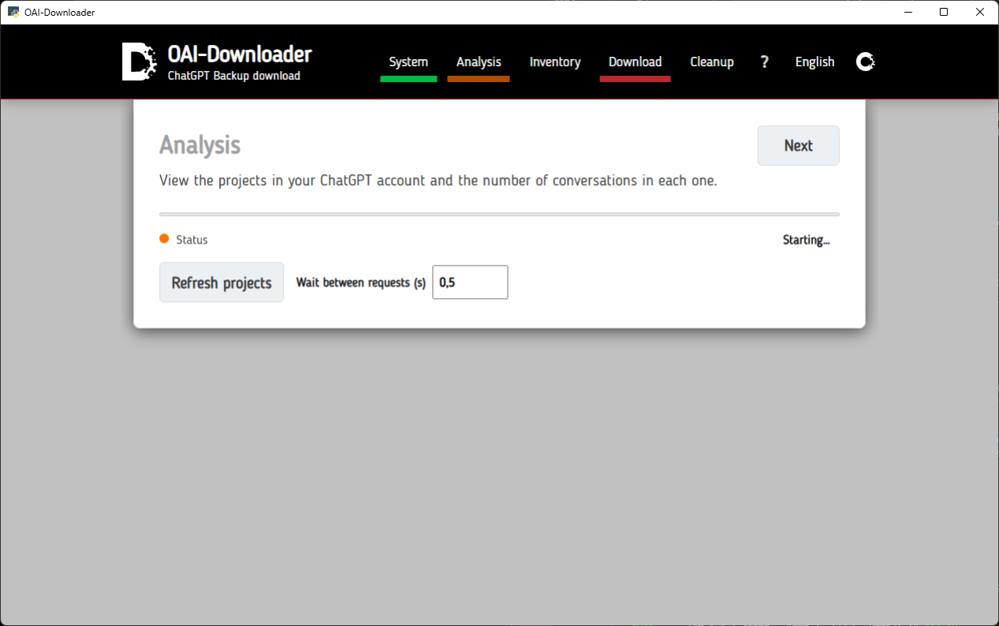
Analysis consulta los proyectos de la cuenta y determina cuántas conversaciones contiene cada uno.
El análisis comienza automáticamente al entrar en la pantalla.
- Barra de progreso: avance de la operación.
- Status: estado actual; naranja indica operación en curso.
- Refresh projects: vuelve a consultar los proyectos.
- Wait between requests (s): espera entre solicitudes a ChatGPT.
El valor de la imagen es 0,5 segundos. Aumentarlo reduce la frecuencia de peticiones, aunque alarga el análisis. Next permanece deshabilitado hasta completar la etapa.
Actualización de proyectos
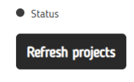
Refresh projects permite repetir el análisis de los proyectos y conversaciones cuando se han añadido, eliminado o reorganizado contenidos.
El indicador Status muestra la situación de la operación: gris, inactiva o pendiente; naranja, en curso; verde, completada.
La actualización requiere una conexión válida con ChatGPT.
Consulta de proyectos en curso
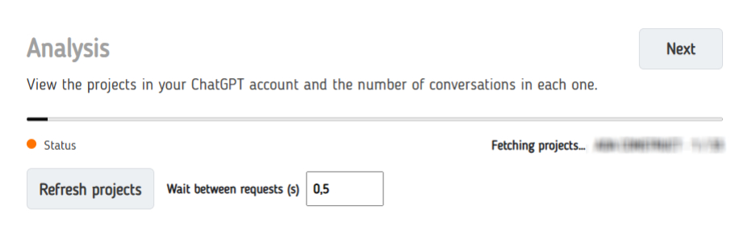
Durante el análisis, OAI-Downloader recupera información de los proyectos y conversaciones.
- Barra de progreso: avance de las consultas.
- Indicador naranja: actividad en curso.
- Fetching projects...: recuperación de los datos de proyectos.
La duración depende del número de proyectos y conversaciones, de la conexión y del intervalo entre solicitudes. Next permanece deshabilitado mientras el análisis continúa.
Analysis: resultados y selección
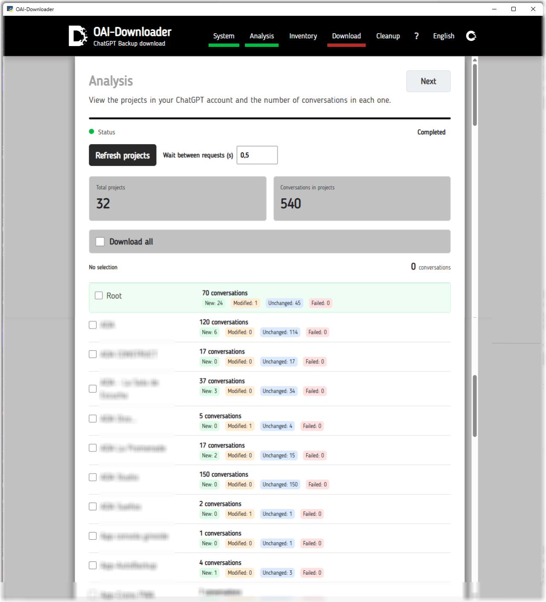
Al terminar el análisis, Status muestra Completed en verde y aparece un resumen de los datos.
Resumen
- Total projects: proyectos identificados.
- Conversations in projects: conversaciones encontradas en ellos.
La captura muestra 32 proyectos y 540 conversaciones.
Lista de proyectos
Cada proyecto muestra su nombre y número de conversaciones. Root agrupa las conversaciones sin proyecto.
- New: conversaciones nuevas.
- Modified: conversaciones modificadas desde la última descarga.
- Unchanged: conversaciones sin cambios.
- Failed: conversaciones con errores previos.
Selección
Download all selecciona todos los proyectos. Las casillas individuales permiten elegir únicamente algunos; el contador muestra el total incluido en la selección. Next lleva a Inventory.
Selección de proyectos
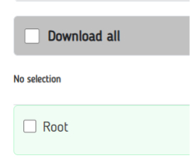
La casilla Download all selecciona todos los proyectos simultáneamente. También se pueden marcar proyectos individuales.
Root agrupa las conversaciones no asociadas a ningún proyecto y puede incluirse o excluirse de forma independiente.
No selection indica que todavía no se ha elegido ningún proyecto. Al marcar proyectos se actualiza el contador de conversaciones seleccionadas.
Inventory: generación del inventario
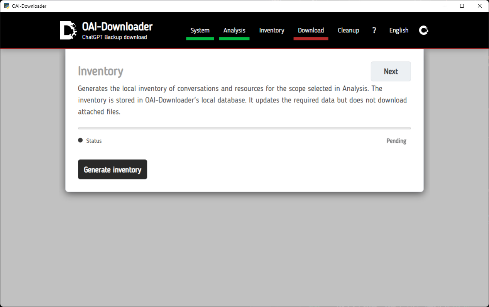
Inventory prepara el inventario local de las conversaciones y recursos de los proyectos seleccionados.
- Procesa las conversaciones incluidas en la selección.
- Identifica los recursos y archivos asociados.
- Actualiza la información de la base de datos local.
- Prepara los datos para la descarga posterior.
Esta etapa todavía no descarga archivos adjuntos.
Generate inventory inicia el proceso. Antes de comenzar, Status indica Pending, la barra está vacía y Next permanece deshabilitado. La duración depende de la cantidad y complejidad de las conversaciones.
Generación y restauración del inventario
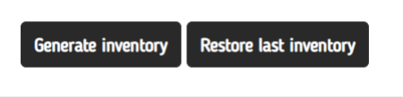
Generate inventory
Crea un inventario nuevo a partir de la selección realizada en Analysis y actualiza la información local sobre conversaciones y recursos.
Restore last inventory
Recupera el último inventario guardado sin repetir la generación. Resulta útil al continuar una descarga interrumpida.
Importante: restaurar un inventario no lo actualiza. Para incorporar conversaciones o recursos nuevos o modificados, debe generarse uno nuevo.
Inventory: resultados del inventario
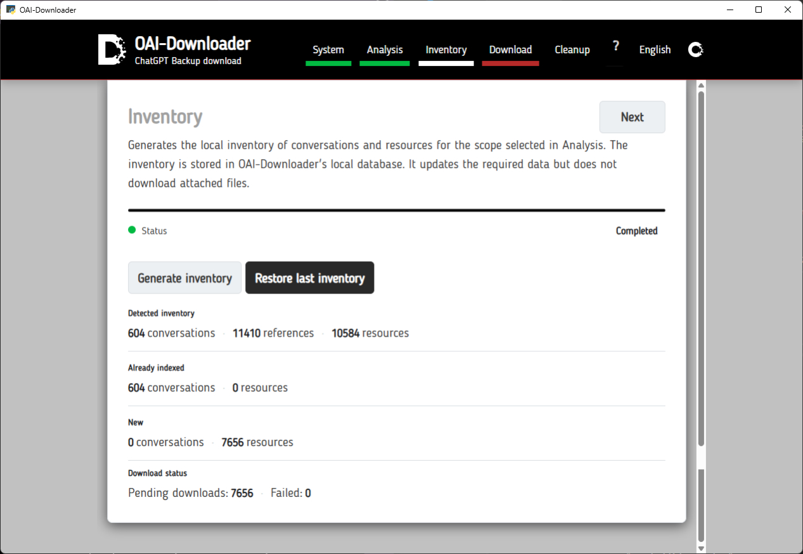
Al finalizar, Status muestra Completed en verde.
Detected inventory
- Conversations: conversaciones procesadas.
- References: referencias a recursos presentes en las conversaciones.
- Resources: recursos distintos identificados.
La captura muestra 604 conversaciones, 11.410 referencias y 10.584 recursos. Un recurso puede tener varias referencias.
Already indexed
Información que ya estaba registrada en la base de datos local.
New
Conversaciones y recursos detectados como nuevos durante la operación. En el ejemplo hay 7.656 recursos nuevos.
Download status
- Pending downloads: recursos pendientes de descarga.
- Failed: recursos con errores registrados.
En el ejemplo hay 7.656 pendientes y 0 errores. Next conduce a Download.
Importante: el inventario puede detenerse aparentemente durante mucho tiempo si una conversación contiene muchos archivos o imágenes generadas. Eso no implica necesariamente un bloqueo.
Gestión y diagnóstico del inventario
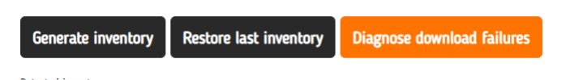
La pantalla ofrece tres operaciones:
- Generate inventory: genera un inventario nuevo y actualiza los registros locales.
- Restore last inventory: recupera el último inventario guardado.
- Diagnose download failures: inicia un diagnóstico de recursos con errores de descarga.
El diagnóstico es una operación distinta de la generación del inventario y de la descarga.
Download: descarga de recursos
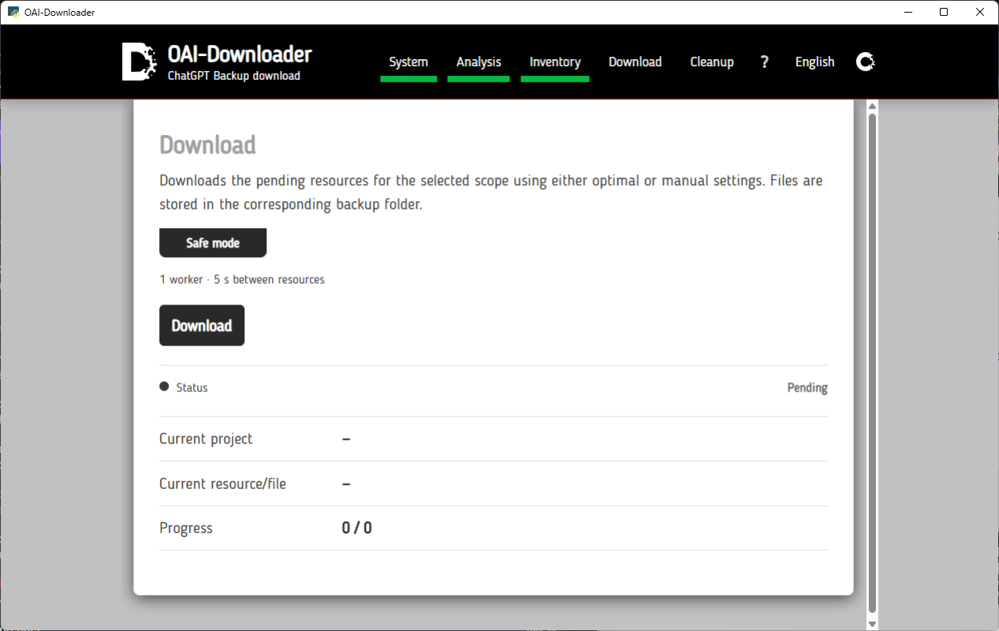
Download permite recuperar los recursos pendientes registrados en el inventario y almacenarlos en la carpeta de datos.
La captura muestra Safe mode, con 1 worker y 5 segundos entre recursos, una configuración conservadora.
Download inicia la transferencia.
Durante la operación aparecen Status, Current project, Current resource/file y Progress. Antes de empezar, el estado es Pending y el progreso 0 / 0.
La duración depende del número y tamaño de los archivos, la velocidad de la conexión y el modo elegido. Los archivos multimedia y las imágenes generadas pueden requerir mucho tiempo.
Modos de descarga
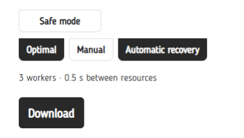
Safe mode
1 worker y 5 segundos entre recursos. Reduce la frecuencia de solicitudes y es útil con conexiones inestables.
Optimal
3 workers y 0,5 segundos entre recursos. Permite procesar varios archivos simultáneamente.
Manual
Permite ajustar individualmente los parámetros.
Automatic recovery
Activa o desactiva la recuperación automática frente a interrupciones y errores.
Tras elegir la configuración, pulsa Download. Como orientación, Optimal es adecuado en condiciones normales; Safe mode, cuando surgen problemas de conexión o limitaciones del servidor.
Configuración manual de descarga
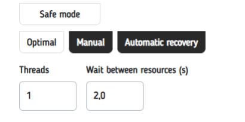
El modo Manual permite ajustar las descargas.
Threads
Número de trabajadores que pueden procesar recursos en paralelo. Con 1 se procesa un recurso a la vez; los valores superiores permiten varios simultáneamente, pero generan más solicitudes.
Wait between resources (s)
Tiempo de espera entre recursos. La imagen muestra 2,0 segundos. Un intervalo mayor reduce la frecuencia de solicitudes.
Automatic recovery
Activa o desactiva la recuperación automática ante errores e interrupciones.
Si aparecen errores frecuentes, puede reducirse el número de trabajadores y aumentarse la espera entre recursos.
Download: descarga en curso
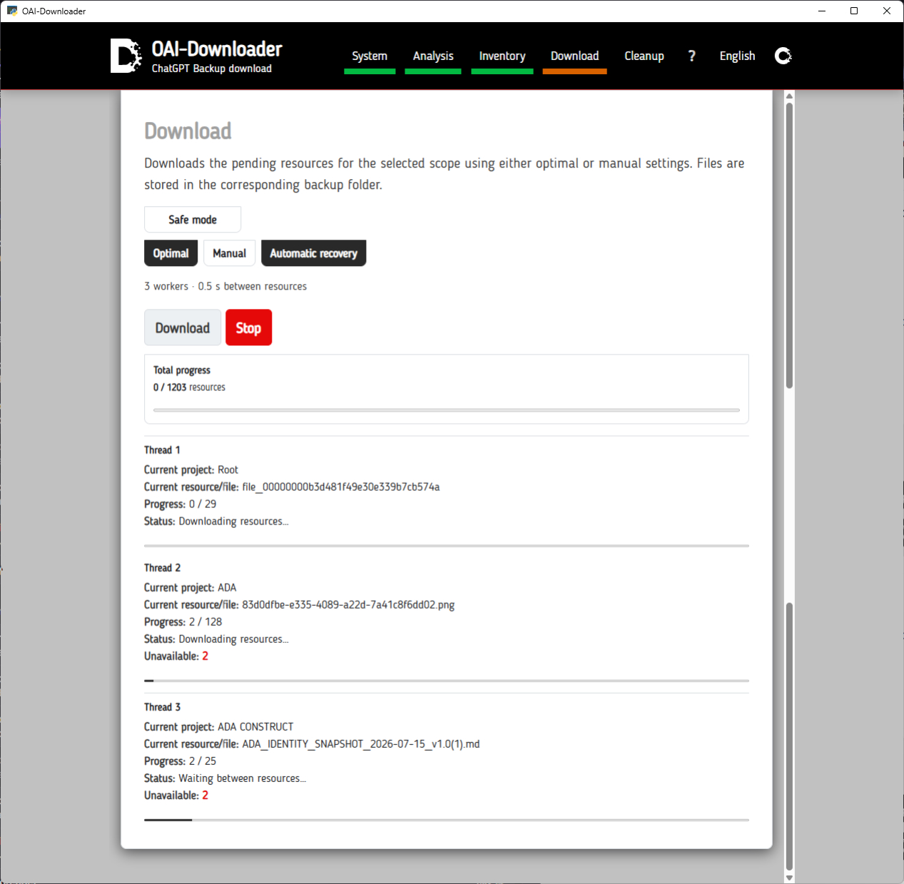
Durante la descarga se muestra el progreso global y la actividad de cada trabajador.
Total progress
Indica los recursos procesados frente al total previsto. La captura muestra 1.203 recursos.
Seguimiento por trabajador
- Thread: identificador del trabajador.
- Current project: proyecto actual.
- Current resource/file: identificador del recurso.
- Progress: avance de ese trabajador.
- Status: acción actual.
- Unavailable: recursos no recuperables contabilizados.
Entre los estados están Downloading resources y Waiting between resources. Los trabajadores funcionan independientemente.
Detener y continuar
Stop interrumpe la descarga. El registro local permite continuar después sin repetir todos los recursos ya procesados.
Importante: un archivo grande, especialmente una imagen generada o un archivo multimedia, puede mantener un trabajador en el mismo elemento durante mucho tiempo sin que exista un bloqueo.
Estadísticas de descarga
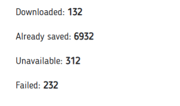
Los contadores distinguen el resultado de los recursos procesados:
- Downloaded: descargados correctamente (132 en la captura).
- Already saved: ya almacenados localmente (6.932).
- Unavailable: no accesibles para su recuperación (312).
- Failed: descargas terminadas con error (232).
Los errores Failed no implican necesariamente la pérdida definitiva del recurso: algunos pueden ser temporales y permitir nuevos intentos.
Cleanup: limpieza de datos locales
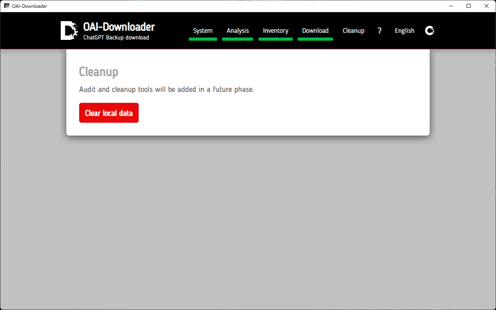
Cleanup reúne las funciones opcionales de limpieza y mantenimiento. No es necesaria para completar las descargas.
Clear local data inicia la limpieza de la información local utilizada por OAI-Downloader.
Precaución: no equivale a borrar conversaciones ni archivos de la cuenta de ChatGPT.
La pantalla indica que las herramientas de auditoría y limpieza se ampliarán en versiones futuras. Esta sección no ofrece actualmente una función para eliminar contenidos de los servidores de ChatGPT.
Confirmación de limpieza
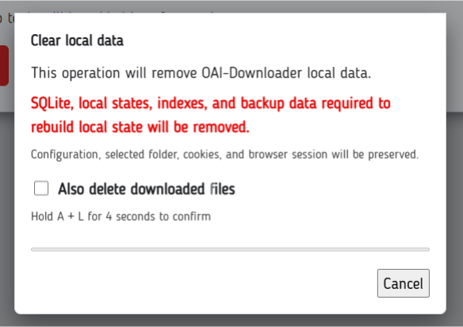
Clear local data abre una confirmación que detalla los datos afectados.
Se eliminan
- Base de datos SQLite.
- Estados locales de procesos.
- Índices de conversaciones y recursos.
- Datos de respaldo del estado local.
Se conservan
- Configuración de la aplicación.
- Carpeta de trabajo seleccionada.
Also delete downloaded files
Esta casilla incluye los archivos descargados en la limpieza. Si no se marca, los archivos se conservan aunque desaparezcan los índices locales que permiten gestionarlos.
Confirmación
La operación exige mantener pulsadas A + L durante 4 segundos. Cancel abandona la operación sin eliminar los datos.
Advertencia: afecta a datos del equipo, no a los existentes en ChatGPT.
Ayuda contextual
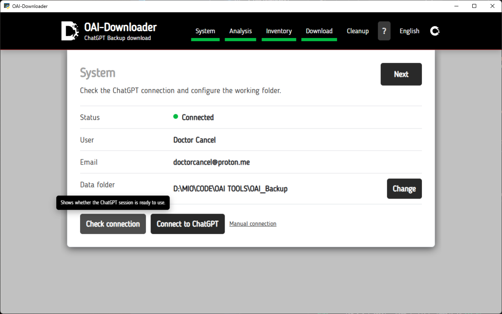
OAI-Downloader ofrece ayuda contextual desde el icono ? de la barra superior.
Una vez activada, al situar el cursor sobre un elemento aparece una explicación de su función. En la captura se muestra la ayuda de Status, que indica si la sesión de ChatGPT está preparada para utilizarse.
Este sistema permite identificar controles sin consultar continuamente el manual.
Selección de idioma
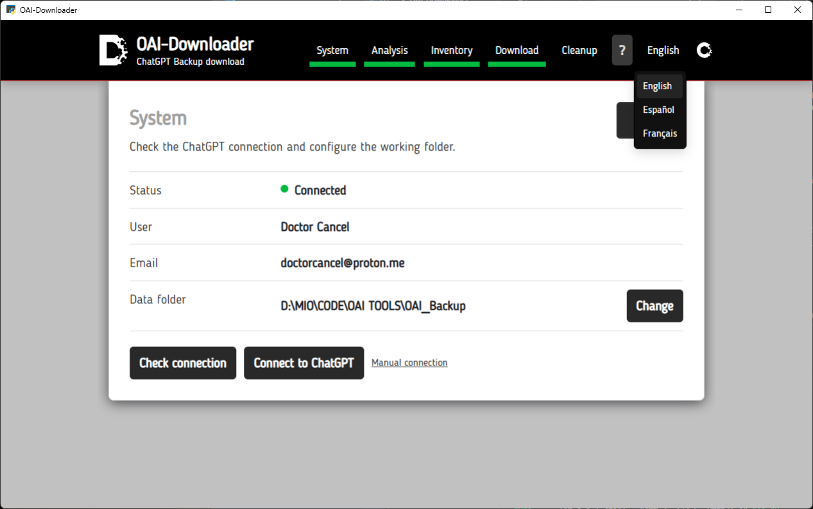
El menú de la barra superior permite elegir entre English, Español y Français.
Pulsa el idioma actual y selecciona otro para cambiar los textos de la interfaz.
El cambio afecta a los controles, estados y mensajes de la aplicación; no modifica los datos descargados ni el contenido original de las conversaciones.
Información de la aplicación
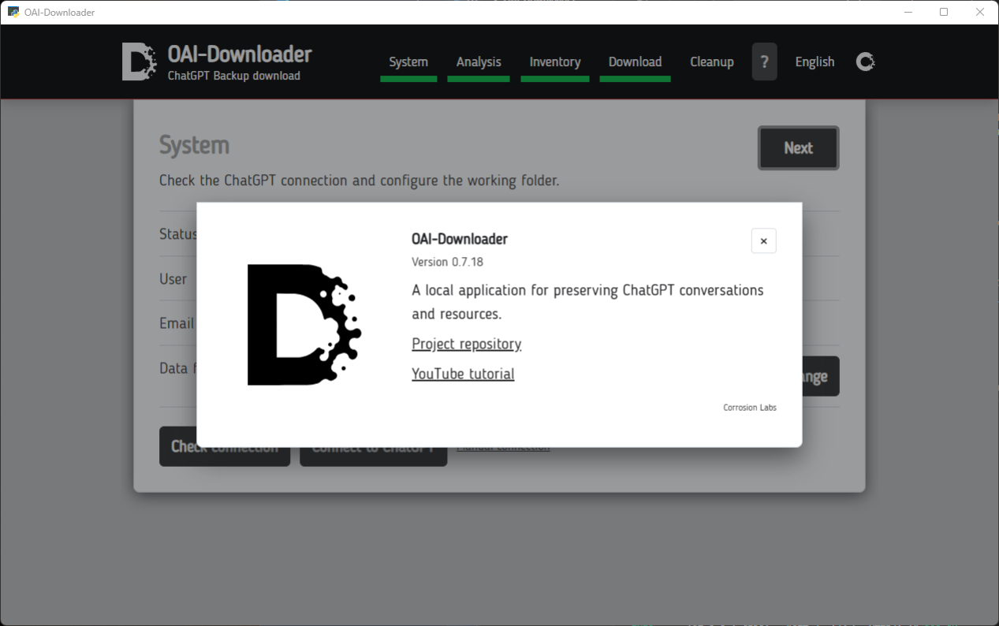
La ventana de información identifica la aplicación, su versión y los recursos oficiales del proyecto.
- Aplicación: OAI-Downloader.
- Versión: 0.7.18 en la captura.
- Descripción: aplicación local para conservar conversaciones y recursos de ChatGPT.
- Desarrollador: Corrosion Labs.
- Project repository: enlace al repositorio del proyecto.
- YouTube tutorial: enlace al tutorial en vídeo.
La ventana se abre desde el icono de información de la barra superior y se cierra con ×.
Introduction
OAI-Downloader is a free application developed by Corrosion Labs to create local backups of conversations and resources stored in a ChatGPT account.
Its goal is to help users retain and control their own data without relying exclusively on OpenAI's official export.
Why did we create OAI-Downloader?
Because retrieving our own ChatGPT data had become an exasperating experience.
OpenAI provides an official export system that, in theory, lets users download their conversation history and associated account data. In practice, our experience was considerably less satisfactory.
Exports that never arrived, incomplete downloads, corrupted files, and backups that turned out to be unusable.
When an account contains years of conversations, projects, documents, and images, these problems stop being a minor technical inconvenience. They become a genuine risk of losing information.
And the most absurd part is that we're talking about our own data.
We shouldn't have to resort to makeshift solutions to retrieve information we've created and stored for months or years on a service that, in many cases, we're paying for.
After several failed attempts with the official export, we decided to build our own tool.
OAI-Downloader wasn't created to make an existing feature more convenient. It was created because we needed an alternative that actually worked.
An application that could examine an account, identify its contents, download them progressively, log errors, and resume an interrupted operation without starting over.
In short, to regain control of our information.
Because it's rather ironic that a company developing some of the world's most advanced technology can't provide a reliable download of its users' data.
What does it do?
- System: checks the connection and configures the working folder.
- Analysis: identifies projects and conversations, distinguishing new, modified and unchanged content.
- Inventory: creates a local inventory of conversations and resources.
- Download: downloads pending resources and records results for future updates.
This workflow supports incremental backups, avoids downloading already saved files again and allows you to select individual projects.
Designed for large amounts of information
It includes download modes, parallel processing, progress tracking and recovery options for long operations. The inventory distinguishes downloaded, pending, unavailable and failed resources.
A preservation tool, not a document exporter
OAI-Downloader focuses on retrieving and preserving original information from ChatGPT. Converting conversations into readable document formats is handled by downstream tools such as OpenAI Obsidian Processor.
Independence and control
It runs locally and lets you choose where backups are stored. It neither replaces ChatGPT nor modifies the content of the account.
Projects, conversations and materials created with these tools should not depend on a single service to keep existing.
OAI-Downloader is an independent Corrosion Labs project and is not affiliated with OpenAI.
Starting the application
IMPORTANT: always start OAI-Downloader using the launcher. This window handles setup and starts the application. Do not start the internal server or interface directly.
First run
On the first run, the launcher asks you to choose where working data and downloaded backups will be stored. It also creates a settings.json file to remember the location.
- Language: selects the launcher language.
- Detected system: displays the automatically detected operating system.
- Data folder / Choose folder: lets you select the storage folder.
- Start application: saves the configuration and starts OAI-Downloader.
You must select a data folder before starting the application for the first time.
Later runs
Once a folder has been configured, the launcher shows a simpler screen. The language selector and detected system remain visible.
- Start application: opens OAI-Downloader using the saved settings.
- Clear local settings: deletes the local configuration so you can choose a data folder again.
Clearing local settings does not delete downloads or backups. You will need to select the working folder again on the next run.
Microsoft Edge WebView2 (Windows)
On Windows, the main application window uses WebView2. If it does not open or reports a WebView2-related error, make sure Microsoft Edge WebView2 Runtime is installed and up to date.
WINDOWS REQUIREMENT: keep WebView2 Runtime updated. Install or update it from the official Microsoft website.
System: initial setup
IMPORTANT · Credential security: OAI-Downloader does not save passwords or authentication cookies to disk. Session credentials are kept only in RAM while the application is running. For this reason, you must sign in to ChatGPT again each time you open OAI-Downloader.
The System screen is OAI-Downloader's starting point. It lets you check the connection to ChatGPT and choose where downloaded data will be stored.
Connection status
The Status field shows the current connection status. No credentials means that access credentials have not yet been configured.
Data folder
Data folder displays the storage location. The Change button lets you choose another folder.
Connection options
- Check connection: checks the available credentials.
- Connect to ChatGPT: starts the connection procedure.
- Manual connection: lets you set up the connection manually.
Stages
System → Analysis → Inventory → Download. The process is sequential: each stage depends on the previous one. Cleanup is optional. Once the connection has been checked, Next lets you proceed.
Navigation bar
The top bar identifies the stages and provides access to general functions.
- System: connection and working folder.
- Analysis: project and conversation analysis.
- Inventory: resource inventory.
- Download: file downloads.
- Cleanup: optional cleanup.
Color indicators show progress: green means completed, orange means in progress and red means pending. You cannot run a stage before completing the preceding stages.
The ? icon opens contextual help, the English selector changes the interface language and the circular icon shows application activity.
Connection status
Status indicates whether OAI-Downloader has the credentials required to connect to ChatGPT.
No credentials, with a gray indicator, means the application does not have access credentials. Use one of the options in System to connect.
Data folder
Data folder shows the local working folder where downloaded data and files are stored.
The Change button lets you select another location. We recommend using a dedicated OAI-Downloader folder with sufficient free space, particularly when there are many media files.
Manual connection using cookies
Manual connection allows you to connect without using the automatic browser-based procedure.
Get the session cookie
- Open ChatGPT and sign in.
- Press F12 to open developer tools.
- Open Network and reload the page.
- Select a request to
chatgpt.com. - Under Request Headers, locate Cookie.
- Copy the complete value without the
Cookie:prefix. - Paste it into Cookie header value in OAI-Downloader.
- Press Save and check to verify the connection.
Security: cookies are private credentials that may grant access to your account. Never share them or show them in screenshots.
System: connected
Once the connection has been verified, System displays details of the connected account.
- Status: Connected: green indicator showing an active connection.
- User: user associated with the account.
- Email: account email address.
- Data folder: selected local folder.
The green indicator under System confirms that the stage is complete. Next becomes available to proceed to Analysis.
Analysis: project analysis
Analysis queries the account's projects and determines how many conversations each contains.
Analysis starts automatically when you open this screen.
- Progress bar: operation progress.
- Status: current state; orange means the operation is running.
- Refresh projects: queries the projects again.
- Wait between requests (s): delay between requests to ChatGPT.
The image shows 0.5 seconds. Increasing this interval reduces request frequency but makes analysis take longer. Next stays disabled until this stage finishes.
Refreshing projects
Refresh projects repeats the analysis after projects or conversations have been added, deleted or reorganized.
The Status indicator shows the operation's state: gray for inactive or pending, orange for in progress and green for completed.
Refreshing requires a valid ChatGPT connection.
Fetching projects
During analysis, OAI-Downloader retrieves information about projects and conversations.
- Progress bar: progress of requests.
- Orange indicator: operation in progress.
- Fetching projects...: project data is being retrieved.
The duration depends on the number of projects and conversations, connection speed and the interval between requests. Next stays disabled during analysis.
Analysis: results and selection
When analysis finishes, Status displays Completed in green along with a summary.
Summary
- Total projects: projects identified.
- Conversations in projects: conversations found in those projects.
The screenshot shows 32 projects and 540 conversations.
Project list
Each project displays its name and conversation count. Root groups conversations that do not belong to any project.
- New: new conversations.
- Modified: conversations changed since the last download.
- Unchanged: conversations with no changes.
- Failed: conversations with previous errors.
Selection
Download all selects all projects. Individual checkboxes let you choose specific projects; the counter shows the total conversations included. Next leads to Inventory.
Selecting projects
Download all selects every project at once. You can also select projects individually.
Root groups conversations not associated with a project and may be included or excluded independently.
No selection indicates that no project has been chosen. Selecting projects updates the selected conversation count.
Inventory: generating the inventory
Inventory prepares the local inventory of conversations and resources in the selected projects.
- Processes conversations in the selection.
- Identifies associated resources and files.
- Updates information in the local database.
- Prepares data for subsequent downloads.
This stage does not download attachments yet.
Generate inventory starts the process. Before it begins, Status shows Pending, the bar is empty and Next remains disabled. Duration depends on the number and complexity of the conversations.
Generating and restoring the inventory
Generate inventory
Creates a new inventory from the selection made in Analysis and updates locally stored information about conversations and resources.
Restore last inventory
Recovers the last saved inventory without generating it again. This is useful when resuming an interrupted download.
Important: restoring an inventory does not update it. To include new or modified conversations or resources, generate a new inventory.
Inventory: results
When the process finishes, Status displays Completed in green.
Detected inventory
- Conversations: conversations processed.
- References: resource references found in conversations.
- Resources: distinct resources identified.
The screenshot shows 604 conversations, 11,410 references and 10,584 resources. One resource may be referenced several times.
Already indexed
Information already recorded in the local database.
New
Conversations and resources identified as new during the operation. The example shows 7,656 new resources.
Download status
- Pending downloads: resources still awaiting download.
- Failed: resources with recorded errors.
The example shows 7,656 pending and 0 failed. Next leads to Download.
Important: inventory generation may appear to stall for a long time if a conversation contains many files or generated images. This does not necessarily mean it has frozen.
Inventory management and diagnostics
The screen offers three operations:
- Generate inventory: creates a new inventory and updates local records.
- Restore last inventory: retrieves the most recently saved inventory.
- Diagnose download failures: starts a diagnosis of resources with download errors.
Diagnostics are separate from both inventory generation and downloading.
Download: resources
Download retrieves pending resources recorded in the inventory and stores them in the data folder.
The screenshot shows Safe mode, with 1 worker and 5 seconds between resources, a conservative configuration.
Download starts the transfer.
During the operation, the screen shows Status, Current project, Current resource/file and Progress. Before starting, the state is Pending and progress is 0 / 0.
Duration depends on the number and size of files, connection speed and selected mode. Media files and generated images may take a long time.
Download modes
Safe mode
1 worker and 5 seconds between resources. Reduces request frequency and is useful on unstable connections.
Optimal
3 workers and 0.5 seconds between resources. Allows several files to be processed simultaneously.
Manual
Lets you adjust the parameters individually.
Automatic recovery
Enables or disables automatic recovery from interruptions and errors.
After choosing the settings, press Download. As a guide, Optimal suits normal conditions, while Safe mode can help with connection problems or server limits.
Manual download settings
Manual mode lets you adjust downloading behavior.
Threads
Number of workers that can process resources in parallel. With 1, one resource is processed at a time. Higher values enable simultaneous processing but generate more requests.
Wait between resources (s)
Delay between resources. The screenshot shows 2.0 seconds. A longer interval reduces request frequency.
Automatic recovery
Enables or disables automatic recovery after errors or interruptions.
If errors occur frequently, reduce the worker count and increase the delay between resources.
Download: in progress
While downloading, OAI-Downloader shows overall progress and the activity of each worker.
Total progress
Shows processed resources relative to the expected total. The screenshot shows 1,203 resources.
Tracking each worker
- Thread: worker identifier.
- Current project: current project.
- Current resource/file: current resource identifier.
- Progress: that worker's progress.
- Status: current action.
- Unavailable: count of resources that cannot be retrieved.
Possible states include Downloading resources and Waiting between resources. Workers operate independently.
Stopping and resuming
Stop interrupts the download. Local records allow the process to resume later without repeating every previously processed resource.
Important: a large file, particularly a generated image or media file, may keep a worker on the same item for a long time without indicating a freeze.
Download statistics
The counters distinguish the results of processed resources:
- Downloaded: successfully downloaded (132 in the screenshot).
- Already saved: previously saved locally (6,932).
- Unavailable: not accessible for retrieval (312).
- Failed: downloads ending in an error (232).
Failed does not necessarily mean a resource is permanently lost: some errors may be temporary and allow another attempt.
Cleanup: local data
Cleanup provides optional cleanup and maintenance functions. It is not required to complete downloads.
Clear local data starts clearing the local information used by OAI-Downloader.
Caution: this is not the same as deleting conversations or files from your ChatGPT account.
The screen notes that audit and cleanup tools will be expanded in future versions. This section currently offers no function to delete content from ChatGPT's servers.
Cleanup confirmation
Clear local data opens a confirmation describing the affected information.
Deleted
- SQLite database.
- Local process states.
- Conversation and resource indexes.
- Backup data for the local state.
Preserved
- Application settings.
- Selected working folder.
Also delete downloaded files
This checkbox includes downloaded files in the cleanup. If unchecked, the files remain even though the local indexes used to manage them are deleted.
Confirmation
You must hold A + L for 4 seconds to confirm. Cancel exits without deleting anything.
Warning: this affects data on your computer, not data stored in ChatGPT.
Contextual help
OAI-Downloader offers contextual help through the ? icon in the top bar.
When enabled, hovering over an element displays an explanation of its function. The screenshot shows the help text for Status, indicating whether the ChatGPT session is ready for use.
This lets you identify controls without repeatedly consulting the manual.
Language selection
The menu in the top bar lets you choose English, Español or Français.
Click the current language and select another to change the interface text.
This changes the application's controls, statuses and messages; it does not modify downloaded data or the original content of conversations.
Application information
The information window identifies the application, its version and official project resources.
- Application: OAI-Downloader.
- Version: 0.7.18 in the screenshot.
- Description: local application for preserving ChatGPT conversations and resources.
- Developer: Corrosion Labs.
- Project repository: link to the project repository.
- YouTube tutorial: link to the video tutorial.
Open the window from the information icon in the top bar and close it using ×.